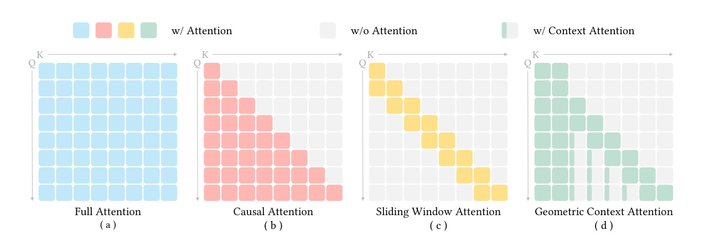
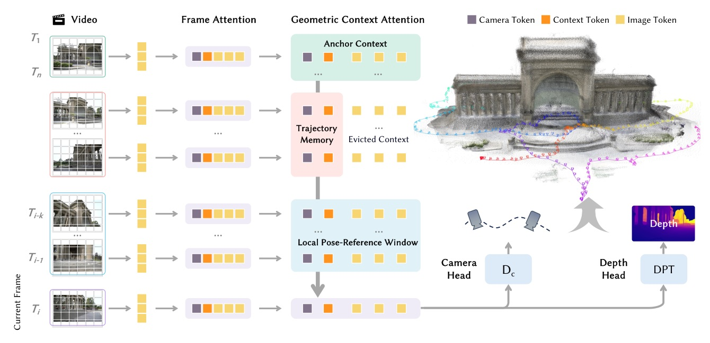
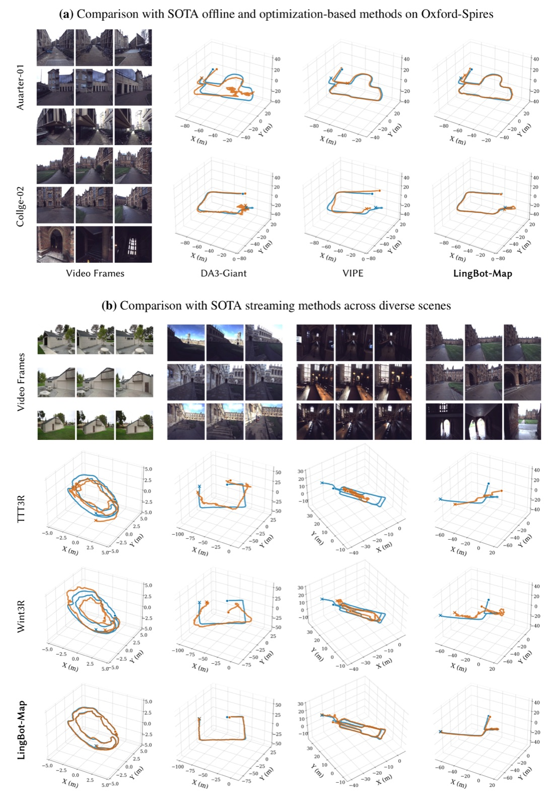
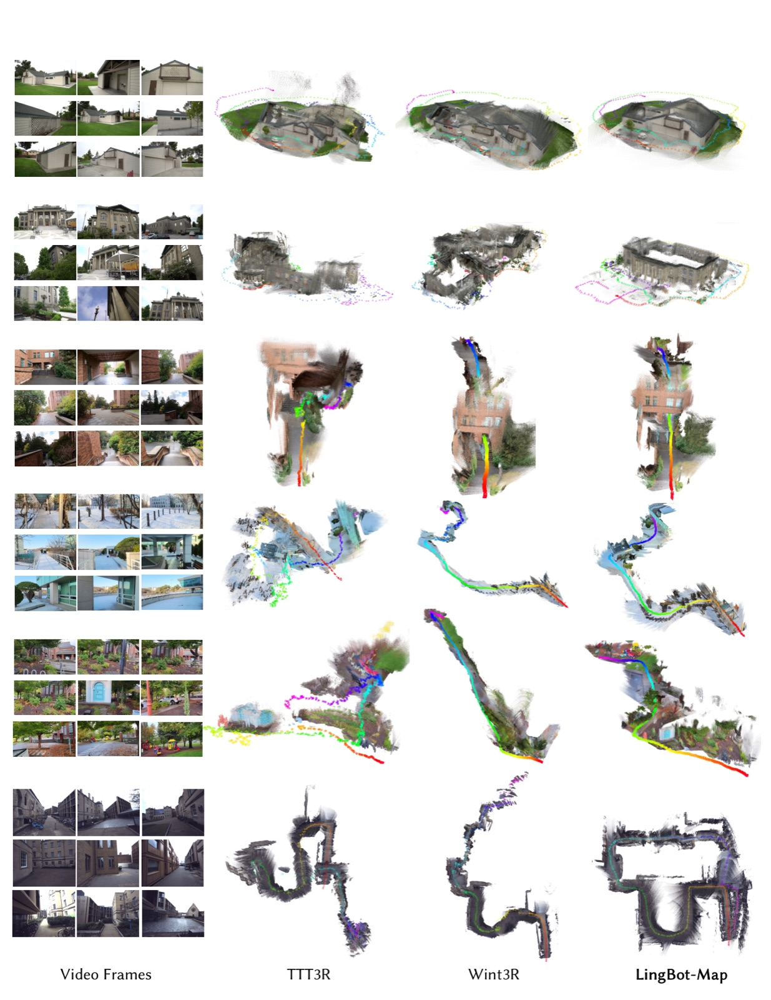

A feed-forward 3D foundation model that keeps SLAM-like geometric state inside learned attention: anchors, local dense window, and compact trajectory memory.
The paper turns “streaming 3D memory” into an attention-design problem.
Instead of retaining every historical image token, GCA keeps full tokens only where they matter and compresses the rest into geometry tokens.
| Family | Context strategy | Failure mode |
|---|---|---|
| Offline foundation models | Full bidirectional/global attention | Not available in causal streaming; brittle under long scene transitions |
| RNN / recurrent streaming | Persistent compressed state | State forgetting; weak retention of geometric priors |
| Causal cache methods | Retain near-complete history | Memory and compute grow rapidly; redundancy mixes with useful geometry |
| Hybrid SLAM + learned models | Handcrafted keyframes + pose graph | Tuning and iterative optimization limit real-time feed-forward use |

Per-frame growth drops from M+6 tokens to just 6 tokens after eviction.

| Mode | How it runs | Best use | Cost |
|---|---|---|---|
| Direct Output | Continuous GCA context without reset | Within about 3,000 frames | More accurate; no inter-window alignment error |
| VO mode | Overlapping windows + state reset + Sim(3) alignment | Tens of thousands of frames | Bounded memory, but alignment drift compounds |
| Method | Type | AUC@15 | ATE | RPE-rot |
|---|---|---|---|---|
| DA3 | offline | 49.84 | 12.87 | 16.17 |
| VIPE | optim | 45.35 | 10.52 | 5.98 |
| CUT3R | online | 5.98 | 18.16 | 7.18 |
| Wint3R | online | 11.61 | 21.10 | 6.27 |
| LingBot-Map | online | 61.64 | 6.42 | 3.70 |
| Method | ATE sparse | ATE dense | Delta ATE | FPS |
|---|---|---|---|---|
| CUT3R | 18.16 | 32.47 | +14.31 | 29.21 |
| TTT3R | 19.35 | 25.05 | +5.70 | 28.97 |
| Wint3R | 21.10 | 32.90 | +11.80 | 3.88 |
| Stream3R-w | 33.03 | 33.73 | +0.70 | 13.66 |
| LingBot-Map | 6.42 | 7.11 | +0.69 | 20.29 |

| Dataset | LingBot-Map | Best runner-up | Margin |
|---|---|---|---|
| ETH3D ATE ↓ | 0.22 | Wint3R 0.86 | ~4x lower ATE |
| 7-Scenes ATE ↓ | 0.08 | TTT3R / Stream3R 0.10 | lowest ATE |
| Tanks & Temples AUC@30 ↑ | 92.80 | Stream3R 81.33 | +11.47 AUC points |
| Tanks & Temples ATE ↓ | 0.20 | Stream3R 0.76 | 3.8x lower ATE |
| Dataset | Metric | LingBot-Map | Runner-up | Gain |
|---|---|---|---|---|
| ETH3D | F1 ↑ | 98.98 | 77.28 | +21.70 pts |
| 7-Scenes | F1 ↑ | 80.39 | 78.81 | first |
| NRGBD | F1 ↑ | 64.26 | 56.96 | +7.30 pts |

Full history is not the same as useful memory.
GCA’s surprising result: evicting dense old image tokens can improve accuracy, because distant redundant frames inject attention noise while compact trajectory tokens keep the geometric signal.
| Added component | Observed effect | Mechanistic reading |
|---|---|---|
| Anchor init | AUC@3 9.80 -> 13.63; ATE 8.59 -> 7.88 | Scale / coordinate grounding makes local registration reliable |
| Context tokens | AUC@3 13.63 -> 15.75; ATE 7.88 -> 7.46 | Six tokens per evicted frame reduce long-range drift |
| Relative pose loss | Without it: RPE-rot 2.26 -> 5.35; ATE 7.46 -> 8.25 | Local pairwise supervision prevents compounding frame-to-frame errors |
| Video RoPE | ATE 7.46 -> 5.98 | Temporal order unlocks trajectory memory for drift correction |
| Attention | ATE ↓ | RPE-trans ↓ | RPE-rot ↓ | FPS ↑ | Mem GB ↓ |
|---|---|---|---|---|---|
| Window 64 | 5.98 | 1.33 | 1.93 | 20.29 | 13.28 |
| Full causal | 6.60 | 1.50 | 1.71 | 11.87 | 36.06 |
“The core difficulty is selective context management: balancing rich geometric context for long-term consistency with a compact state for efficient inference.”
核心難點不是單純記憶多寡，而是在長期一致性所需的幾何上下文與高效推論所需的緊湊狀態之間取捨。§1 p.2
“Since each new frame adds (M+6) tokens under causal attention but only 6 under GCA, the per-frame growth rate is reduced by roughly 80x for typical values (M≈500).”
causal attention 每幀新增 M+6 token，而 GCA 只新增 6 個 context token；在 M 約 500 時，每幀成長率約降 80 倍。§3.2 p.6
“Retaining all historical image tokens introduces noise from distant, less relevant frames that can confuse the attention computation.”
全量歷史影像 token 不一定更好；遠距且關聯弱的 frame 會把噪聲引進 attention，反而讓軌跡一致性變差。§6.4 p.18
“Direct mode produces more accurate trajectories by avoiding inter-window alignment error, and is the preferred choice when the sequence length stays within ~3,000 frames.”
Direct mode 避免跨 window 對齊誤差，因此在約 3,000 frame 內是更準確的選擇；更長序列再用 VO mode 換 bounded memory。§4.4 p.10
Today’s takeaway: selective geometric memory beats brute-force history for streaming 3D reconstruction.